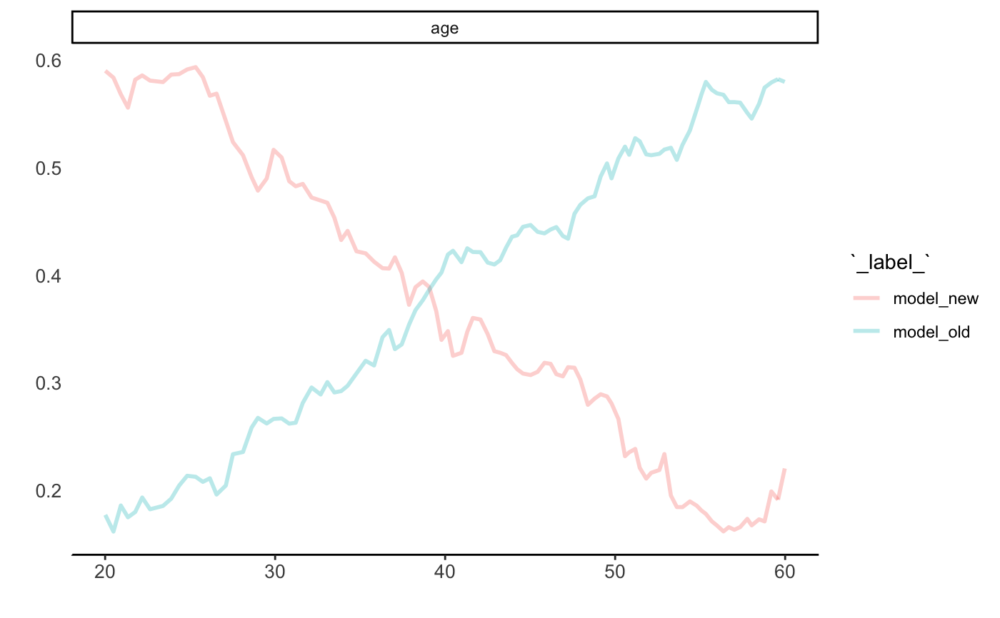

Print Model Drift Data Frame
Print Model Drift Data Frame
# S3 method for model_drift print(x, max_length = 25, ...)
Arguments
| x | an object of the class `model_drift` |
|---|---|
| max_length | length of the first column, by default 25 |
| ... | other arguments, currently ignored |
Value
this function prints a data frame with a nicer format
Examples
library("DALEX2")library("ranger") predict_function <- function(m,x,...) predict(m, x, ...)$predictions model_old <- ranger(m2.price ~ ., data = apartments) model_new <- ranger(m2.price ~ ., data = apartments_test) calculate_model_drift(model_old, model_new, apartments_test, apartments_test$m2.price, max_obs = 1000, predict_function = predict_function)#> Variable Shift Scaled #> ----------------------------------------------- #> m2.price 1.93 0.2 #> construction.year 73.29 8.1 #> surface 28.83 3.2 #> floor 38.05 4.2 #> no.rooms 17.70 2.0 #> district 154.98 17.2 .# here we compare model created on male data # with model applied to female data # there is interaction with age, and it is detected here predict_function <- function(m,x,...) predict(m, x, ..., probability=TRUE)$predictions[,1] data_old = HR[HR$gender == "male", -1] data_new = HR[HR$gender == "female", -1] model_old <- ranger(status ~ ., data = data_old, probability=TRUE) model_new <- ranger(status ~ ., data = data_new, probability=TRUE) calculate_model_drift(model_old, model_new, HR_test, HR_test$status == "fired", max_obs = 1000, predict_function = predict_function)#> Variable Shift Scaled #> ----------------------------------------------- #> gender 0.00 0.2 #> age 0.27 56.6 *** #> hours 0.04 8.3 #> evaluation 0.01 2.6 #> salary 0.01 2.8 #> status 0.00 0.2# plot it library("ceterisParibus2") prof_old <- individual_variable_profile(model_old, data = data_new, new_observation = data_new[1:1000,], label = "model_old", predict_function = predict_function) prof_new <- individual_variable_profile(model_new, data = data_new, new_observation = data_new[1:1000,], label = "model_new", predict_function = predict_function) plot(prof_old, prof_new, selected_variables = "age", aggregate_profiles = mean, show_observations = FALSE, color = "_label_")